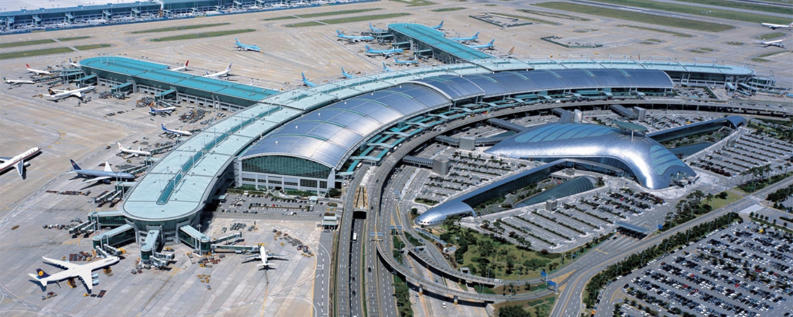
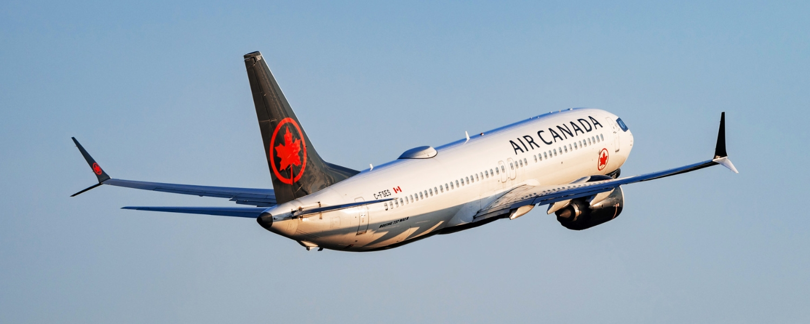
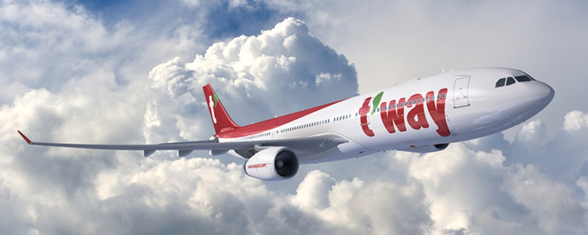
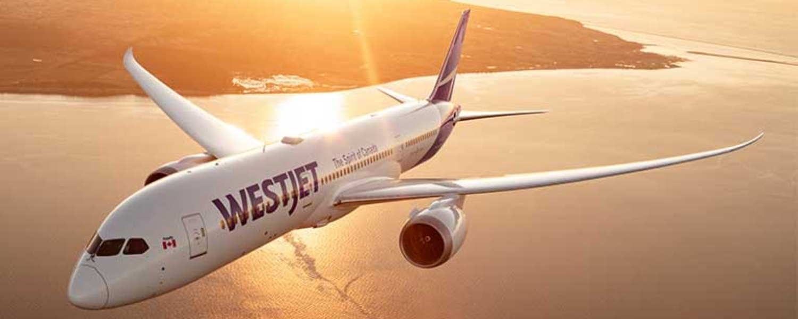

July 8, 2026
General TravelHow to Get to Seoul from Canada: Every Route Explained
Seoul, and South Korea as a whole, has become one of the most talked about destinations on the planet, and Canadians are booking it in bigger numbers than ever.
Here is the good news for anyone feeling that pull: getting to Seoul from Canada has never been easier. Four airlines now fly nonstop across the Pacific, spread across two full-service flag carriers, one of Asia's most respected airlines, and a rising low-cost carrier bringing a very different kind of value to the route. You can cross in a lie-flat business suite, in a comfortable long-haul economy cabin, or on a fare that leaves more room in the budget for the trip itself.
The catch is that the best way to get there is not the same for everyone. It depends on which city you are flying from and what you value most in the air. Travellers out of Vancouver and Toronto in particular have real choice, with multiple carriers competing for the same route.
Here is your complete guide to flying from Canada to Seoul.
Where You Fly Into
Seoul keeps things simple. Every nonstop flight from Canada lands at a single airport, so there is no decision to make about where you touch down.
Incheon International Airport (ICN)

Source: Skytrax.
Incheon sits on Yeongjong Island, roughly 60 kilometres west of central Seoul, and it is consistently ranked among the best airports in the world. As one of the major transfer hubs in Northeast Asia, home to more than 100 airlines, it is a smooth, modern place to begin a trip. The distance from the city looks daunting on a map, but the train connection makes it a non-issue.
That train is the AREX (Airport Railroad Express), and it runs in two versions. Which one you want depends on whether you are prioritising speed and comfort or saving a few dollars.
The Express train runs nonstop to Seoul Station and is the easiest choice after a long-haul flight, with reserved seats, luggage space, and free WiFi.
- Travel time: about 43 minutes from Terminal 1, around 51 minutes from Terminal 2
- Frequency: roughly every 20 to 40 minutes
- Cost: around ₩9,500 one way, with small discounts available when booked online ahead of time
The All-Stop (commuter) train is the budget option and works more like a regular subway line. It stops at around a dozen stations on the way in, including Gimpo Airport and the Hongik University stop for the Hongdae neighbourhood, and it is fully integrated into the Seoul Metro, so your T-money card and free transfers to connecting lines both work.
- Travel time: just under an hour to Seoul Station
- Frequency: every 5 to 10 minutes
- Cost: around ₩4,150 to ₩4,750, depending on your destination
Choose the Express if you want the fastest, most comfortable ride straight to Seoul Station, or the All-Stop if you are heading to Hongdae, want to connect directly to the subway, or simply prefer to keep costs down.
The last Express train leaves Incheon around 10:48 pm, and the slower All-Stop train keeps running until roughly 11:38 pm. If you land later than that, buses and taxis are the fallback. Airport buses reach most parts of the city in roughly 60 to 80 minutes, while a taxi runs about an hour depending on traffic and costs considerably more.
Air Canada Flights to Seoul

Source: Air Canada.
Air Canada offers the broadest Canadian network to Seoul, with nonstop service from Vancouver, Toronto, and Montreal. As Canada's flag carrier and a Star Alliance member, it is also the natural choice if you collect Aeroplan and want to earn or redeem on the way over. Every one of these routes flies the Boeing 787-9, so the cabin experience is consistent no matter which city you leave from.
Vancouver to Seoul Incheon
Daily, year-round service on the Boeing 787-9. Vancouver is one of the bright spots for choice on this map, served by three different airlines flying to Seoul, so West Coast travellers have options the rest of the country does not.
Toronto to Seoul Incheon
Daily, year-round service on the Boeing 787-9. Toronto is the other city with real competition, with both Air Canada and Korean Air flying the route daily, giving Eastern Canada a proper choice of carrier.
Montreal to Seoul Incheon
Seasonal service on the Boeing 787-9, operating four times weekly through the summer until the end of October 2026. It gives Quebec travellers their own nonstop across the Pacific without backtracking through Toronto or Vancouver.
Across all of these routes, Air Canada offers its full three-cabin experience. In Signature Class, you get lie-flat seats with direct aisle access, upgraded dining, and access to the Maple Leaf Lounge before you fly. Premium economy is a comfortable middle ground, with noticeably more room than economy (37 inch pitch, 20 inch width, and up to 8 inches of recline). Economy is a dependable long-haul product with meals, snacks, and personal entertainment screens at a standard 31 inch pitch. It does not always wow, but it is consistent and comfortable.
Boeing 787-9 (298 seats)
| Cabin | Seats | Layout |
|---|---|---|
| Business | 30 | 1-2-1 lie-flat |
| Premium Economy | 21 | 2-3-2 |
| Economy | 247 | 3-3-3 |
Booking with Aeroplan: You can book Air Canada's own flights to Seoul using Aeroplan points, but keep in mind that Air Canada uses dynamic pricing on its own metal, so the number of points required can move around based on demand, route, and how far ahead you book. It pays to check a few different dates to find the sweet spot.
Korean Air Flights to Seoul
Source: SkyTeam.
Korean Air is South Korea's flag carrier and a founding member of the SkyTeam alliance, with Incheon as its home hub. It has a long-standing reputation for polished service and a well-regarded Prestige business class, and it gives Canadians a compelling alternative to Air Canada on two of the busiest routes.
Vancouver to Seoul Incheon
Daily, year-round service on the Boeing 787-10, the stretched version of the Dreamliner. It is a dependable everyday link from the West Coast and adds a strong second option out of Vancouver.
Toronto to Seoul Incheon
Daily, year-round service on the Airbus A350-900, one of the most modern widebodies flying today, known for its quiet cabin, higher humidity, and large windows. It gives Toronto travellers a head-to-head choice against Air Canada.
On both aircraft, Korean Air flies a two-cabin layout. Prestige (business) class uses lie-flat seats in a 1-2-1 arrangement, so every passenger has direct aisle access, paired with attentive service and a strong dining program. Economy is laid out 3-3-3 with a roomy 32 inch pitch on the 787-10 and 32 to 33 inches on the A350-900, a touch above the long-haul standard, delivered with the calm, courteous service the airline is known for.
Boeing 787-10 (325 seats, Vancouver route)
| Cabin | Seats | Layout |
|---|---|---|
| Prestige (Business) | 36 | 1-2-1 lie-flat |
| Economy | 289 | 3-3-3 |
Airbus A350-900 (311 seats, Toronto route)
| Cabin | Seats | Layout |
|---|---|---|
| Prestige (Business) | 28 | 1-2-1 lie-flat |
| Economy | 283 | 3-3-3 |
Booking with points: Korean Air is a SkyTeam carrier, so it cannot be booked with Aeroplan. For Canadians, the most practical route is Air France-KLM Flying Blue miles, which transfer 1:1 from American Express Membership Rewards, though Flying Blue uses dynamic pricing so the cost can swing quite a bit. Korean Air's own SKYPASS program prices partner and own-metal awards on fixed charts that can offer real value, but with no Canadian credit card transfer partner, those miles are difficult to build up unless you fly the airline regularly.
T'way Air Flights to Seoul

Source: T'way Air.
T'way Air is the newcomer on this route and the most interesting story of the group. A South Korean low-cost carrier now flying long-haul, it brings budget fares to the Pacific while still offering a business cabin, which is unusual for an airline in its class.
Vancouver to Seoul Incheon
Three to four times weekly on the Airbus A330-300. This is a seasonal-style operation currently scheduled to run through until the end of March 2027, so it is worth booking ahead if it fits your dates.
T'way flies a two-cabin A330-300 with 347 seats. Up front is a compact 12-seat business cabin in a 2-2-2 layout, with a generous 59 inch pitch and seats that recline to 165 degrees. It is worth being clear here: this is a deep recliner rather than a true lie-flat bed, so it is a step below the fully flat business seats on Air Canada and Korean Air, but at a low-cost carrier fare it can still be excellent value for a daytime crossing. Economy holds 335 seats in a 2-4-2 layout, with a 32 inch pitch that is a touch roomier than the long-haul standard. As with any budget carrier, expect the base fare to cover the seat while extras like bags, meals, and seat selection are added on.
Airbus A330-300 (347 seats)
| Cabin | Seats | Layout |
|---|---|---|
| Business | 12 | 2-2-2 (reclines to 165°) |
| Economy | 335 | 2-4-2 |
Booking with points: As a low-cost carrier outside the major alliances, T'way is not bookable with Aeroplan or the usual Canadian points programs. Think of it as a cash-fare play, best when the all-in price beats the full-service carriers by enough to matter.
How the Vancouver Cabins Compare
Vancouver is the only Canadian city with three carriers on the Seoul route, so it is worth seeing how they stack up where it matters most on a long crossing: economy comfort.
| Airline | Economy pitch | Layout | Notes |
|---|---|---|---|
| Air Canada | 31 in | 3-3-3 | Best onward Aeroplan connections |
| Korean Air | 32 in | 3-3-3 | Flag carrier, hub at Incheon |
| T'way Air | 32 in | 2-4-2 | Budget fares, business cabin available |
The three sit closer together than you might expect. Korean Air and T'way both edge out Air Canada slightly on economy pitch at 32 inches versus 31, though the differences are modest and all three are comfortable enough for the crossing. The real distinctions are elsewhere: Air Canada is the pick if you want the smoothest Aeroplan earning and onward connections, Korean Air pairs a roomy economy with the polish of a flag carrier flying into its home hub, and T'way is the value play, trading full-service frills for a lower fare while still offering a business cabin if you want to splurge.
How the Toronto Cabins Compare
Toronto is the other city with a real choice, going head to head between Air Canada and Korean Air, both flying the route daily year-round.
| Airline | Economy pitch | Layout | Notes |
|---|---|---|---|
| Air Canada | 31 in | 3-3-3 | Boeing 787-9, Star Alliance / Aeroplan |
| Korean Air | 32-33 in | 3-3-3 | Airbus A350-900, SkyTeam |
It is a close call that comes down to what you value. Korean Air's A350-900 gives Toronto travellers a slight edge in economy pitch and one of the most modern widebodies in the sky, with the extra bonus of an "Extra Legroom" section in the first few rows stretching to a roomy 36 inches. Air Canada counters with its familiar 787-9, the strongest Aeroplan earning and onward connections, and the convenience of Canada's own network. If you are chasing comfort and a newer cabin, Korean Air has the nod; if points and connections matter more, Air Canada is the natural pick.
WestJet Flights to Seoul

Source: WestJet.
WestJet gives Calgary its own nonstop link to South Korea, and it is the only carrier flying the route from Alberta.
Calgary to Seoul Incheon
Six times weekly on the Boeing 787-9, running seasonally through until the end of November 2026. It gives Western Canada a direct gateway to Seoul without connecting through Vancouver, though the seasonal schedule means it is worth booking ahead while the service is running.
WestJet flies its three-cabin Dreamliner here, with a lie-flat business cabin up front. The published configuration is 16 business class seats in a 1-2-1 layout, 28 premium economy seats in 2-3-2, and 276 economy seats in 3-3-3.
Boeing 787-9 (320 seats)
| Cabin | Seats | Layout |
|---|---|---|
| Business | 16 | 1-2-1 lie-flat |
| Premium Economy | 28 | 2-3-2 |
| Economy | 276 | 3-3-3 |
Booking with points: WestJet flights earn and redeem through WestJet Rewards rather than Aeroplan, so keep that in mind if you are a dedicated points collector deciding between carriers.
Tips for Finding Cheap Flights to Seoul
Fares between Canada and Seoul swing quite a bit depending on the season and how far ahead you book. A few strategies to help you land a better deal:
- Book early for the busy seasons. Spring cherry blossom season in late March and April, and the crisp autumn weeks in October and November, are peak periods when fares climb fast.
- Look at shoulder season. Early summer and the tail end of autumn tend to offer strong value with thinner crowds.
- Fly from Vancouver if you can. With three airlines competing, West Coast fares are often the most competitive in the country.
- Consider T'way for rock-bottom fares. Just budget for the add-ons so you can compare the true all-in cost against the full-service carriers.
- Use points strategically. Aeroplan works well on Air Canada, while Flying Blue miles (transferable from Amex) can unlock Korean Air.
- Watch for seasonal schedule changes. The Calgary and Montreal routes run only part of the year, and T'way operates on a lighter weekly schedule, so book ahead when the timing works.
- Take the AREX into the city. Whichever carrier you choose, the airport train is faster and cheaper than a taxi and drops you right at Seoul Station.
The Bottom Line
Seoul has never been easier to reach from Canada, with nonstop flights from Vancouver, Calgary, Toronto, and Montreal across four different airlines.
Vancouver travellers are the most spoiled for choice, with three carriers to pick from and a real range of experiences, from Korean Air's polished Prestige cabin to Air Canada's dependable three-cabin service to T'way's budget-friendly fares. Toronto gets its own head-to-head between Air Canada and Korean Air, while WestJet keeps Alberta connected and Air Canada gives Quebec a seasonal nonstop of its own.
Whether you are chasing a lie-flat business seat, a comfortable economy cabin, or simply the lowest fare across the Pacific, there is a Seoul route to suit you. If South Korea is on your list, now is the time to start tracking fares and locking in your trip.
Happy travels!